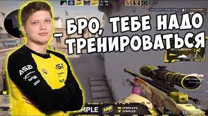

Бро тебе надо тренироваться

Фраза “Бро тебе надо тренироваться” принадлежит стримеру и киберспортсмену Александру Костылеву. В индустрии его знают по никнейму S1mple (Симпл).
Во время одного из стримов Симпл неудачно закончил катку и произнес небольшой монолог.Ой сука, халява ебаная. Бро надо тренироваться. Братан, иди тренируйся. Я все равно всех разъебу, когда наберу форму.В июне 2020 года конструкция “Бро тебе надо тренироваться” стала частью общего тренда с мемами, которые пародируют заставки ютуба (превью-изображения). Поэтому в тематических пабликах ВКонтакте начали появляться новые картинки с портретом Симпла и его цитатой.